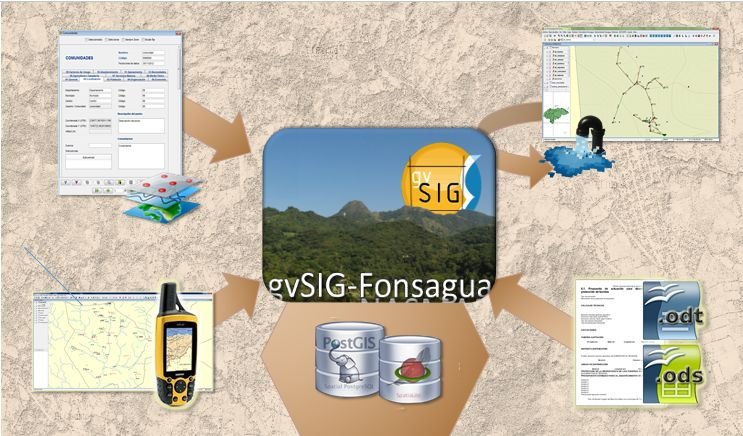

Within the International Cooperation program, the technicians have to manage several sources of data and analyzing them to generate some alternatives for water and sanitation projects. Before gvSIG Fonsagua development, those processes were being made by using several different tools in a highly manual process. Some of the tools were:
And the figure below show the flows of information between the applications:
gvSIG Fonsagua application has integrated in an unique tool the capabilities for the technicians to gather, analyze and get information in the context of Water and Sanitation programs.
Having the information centralized and automatizing some process, has major advantages, such as:
The image below show the functionalities the users can do by using gvSIG Fonsagua:
In the table below is possible to see how the use of gvSIG Fonsagua has improved the processes:
Before gvSIG Fonsagua |
After gvSIG Fonsagua |
|
| Introducing information | Some on the collected information was saved into the Access Database, other one was saved separately into the ShapeFiles through ArcGIS software. | All the information is stored in an unique tool. |
| Generating proposals | By using a spreadsheet program, the technicians took data from database plus the Geographical Information System in a manual way. Part of the information generated by the proposal selected was saved into the database and other into the GIS. | The user access the info saved earlier in a transparent and automatic way and the results are automatically saved to the DB. |
| Generate reports | Reports were done in an automated way from database including manually some maps. | No significant improvements. |